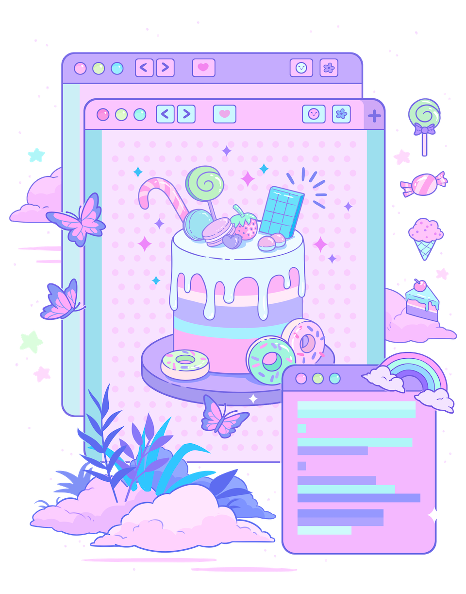

Part Mac app, part browser extension. Your CSS and JavaScript.
/**
* When you visit any website, Sprinkles checks a directory
* on your computer for .css and .js files matching the
* site's hostname, then applies those to the site.
*
* For example, to make GitHub a more fruity experience,
* in github.com.css:
*/
body { background: papayawhip; }
/**
* Seemingly innocent but this is web browsing super powers.
*
* You can change badly chosen fonts or hide any element from
* your favourite websites. Whatever CSS can do, you can do.
*
* To really get cooking, we can add JavaScript too – try
* changing the file above ⤴
*/
// I like my tweets in "Latest tweets" mode.
// Too much algo, no thanks!
//
// This snippet automatically clicks all the buttons to bring back
// Latest Tweets whenever Twitter switches preferences for me.
let attempts = 0;
function main() {
attempts++;
// Find the header signifying current timeline mode
const title = document.querySelector('[data-testid="primaryColumn"] h2[role="heading"]');
// If it hasn't loaded yet, try again in 0.5 secs
if (!title && attempts < 10) { setTimeout(main, 500); return; }
// If not matching Home, stop looking
if (title.innerText !== "Home") return;
// Click ✨
document.querySelector('[aria-label="Top Tweets on"]').click();
// Wait 0.5 secs then click "Latest tweets"
setTimeout(() => {
document.querySelector('div[role="menuitem"]').click();
}, 500);
}
main();
// We can even add code to *all* sites, try the next file ⤴
// Code in global.js and global.css will be loaded on all sites.
//
// Here's a snippet from my global.js that gives me a panic button to
// fix anything but pleasant typography. Which I do all the time:
let styleElm = null;
document.addEventListener("keyup", event => {
// ctrl+alt+s toggles the font fix
if (event.keyCode === 83 && event.ctrlKey && event.altKey) {
if (styleElm) { styleElm.remove(); styleElm = null; return; }
styleElm = document.createElement("style");
styleElm.innerHTML = `
* { font-family: system-ui, sans-serif !important; }
`;
document.body.appendChild(styleElm);
}
});
How does it work?
Sprinkles runs a tiny webserver on you machine. When you visit a
website, the browser extension asks this server for scripts. The
server looks for 4 files in your Sprinkles scripts directory:
global.js
global.css
github.com.js
github.com.css
When there's a hit, the extension adds the provided JS and CSS.
Why is it great?
Edit scripts in the editor of your choice
Like UserScripts or Stylish — but combined and bundled into
one
Portable between browsers with support for Safari, Google Chrome
and Firefox

Interested?
Sprinkles is still getting ready for its first release — but you can
try it now if you aren't scared away by words like beta or
experimental. (I use it all day, every day.)
Sign up to download the beta and get updates on development. No
spam, of course.